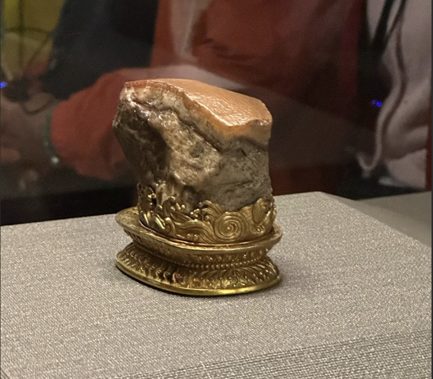

Artifact in National Palace Museum
Pork Shaped Stone - 肉形石; ròuxíngshí
The artifact I chose is a stone that is shaped like a piece of pork. At the time in China, the people starved but the king didn’t know that because the informant didn’t tell the truth about the people’s starvation. One day a man brought this stone and present it to the king. The king took one bite of it and it was then that he realized it was a rock. The man told the king that everyday his people had to eat rice with pig oil due to lack of money and food. They ate while looking at the rock to imagine the taste of pork when eating.
Legacy of Early Society That We Still Use Today
One of them is an old pencil case which we now use for packaging such as mooncake boxes and so on. Apart from that, we now take the design of the basin that was used for bathing kings in ancient times to be used as a plate for placing fruit. So we still use all these things, only their uses have changed.